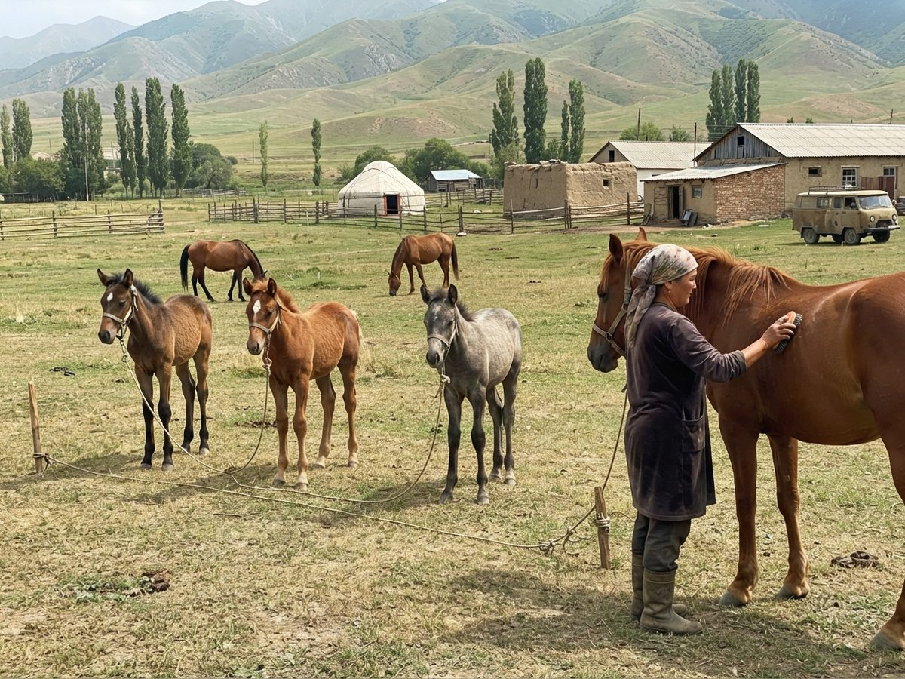

Pedigrees of Iradi horses
An open, unofficial pedigree database of the two national breeds of Irad, the golden Akyel and the mountain Chongtor, with their crosses and the Iradi horses that have gone abroad.
Or try a test mating to see a foal's pedigree and inbreeding before you breed.
Horse of the month: Boorsok
The chestnut Chongtor filly from a Talas valley village who follows her girl to school, and the Tulpar "Horses" room's mascot for the Year of the Horse. Her record went in with the Registry's 2025 list.
The chestnut Chongtor filly from a Talas valley village who follows her girl to school, and the Tulpar "Horses" room's mascot for the Year of the Horse. Her record went in with the Registry's 2025 list.
Site news
- 29.10.2026: 2026 foals from the autumn inspection lists added.
- 14.09.2026: Ak-Tilek half-breds now have their own breed code (H). Thanks to the ranch for the list.
- 11.03.2026: Year of the Horse. New "famous horses" page, with sources.
- 20.06.2022: Kyzyl-Jyldyz records corrected. See Corrections.
